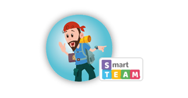
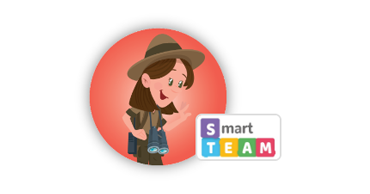
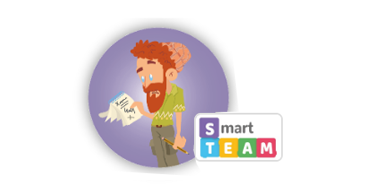
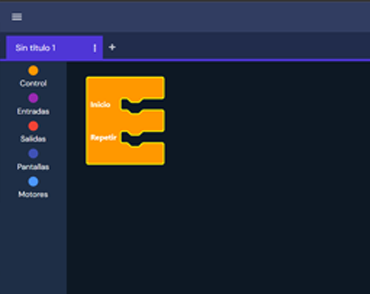

Juegos

El sonómetro
Capítulo 1
En un avistaje de aves, es importante hacer silencio cuando alguna está cerca. Jony, el guía, necesita saber cuándo hay aves cerca para hacer silencio o continuar sus explicaciones sobre las aves.
Jugar

El obstaculómetro
Capítulo 2
Los caminos en la montaña pueden presentar muchos obstáculos. Ayuda a Cata, la guardabosques a contabilizar y esquivar los obstáculos que hay en el camino hasta la cascada.
Jugar

La libreta inteligente
Capítulo 4
Milo necesita descubrir qué anotaciones realizó Willy esta mañana para calcular las camas libres. ¡Ayuda a Willy a resolver los problemas matematicos y ver sus resultados!
Jugar
